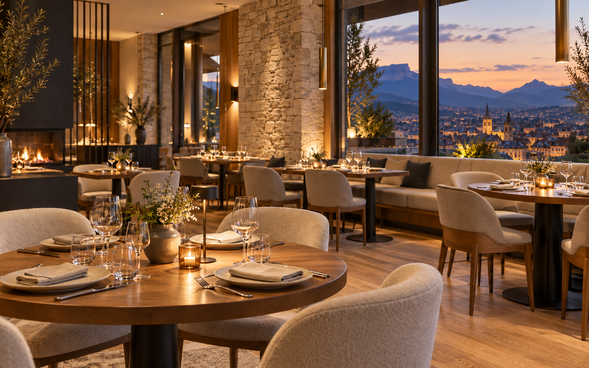
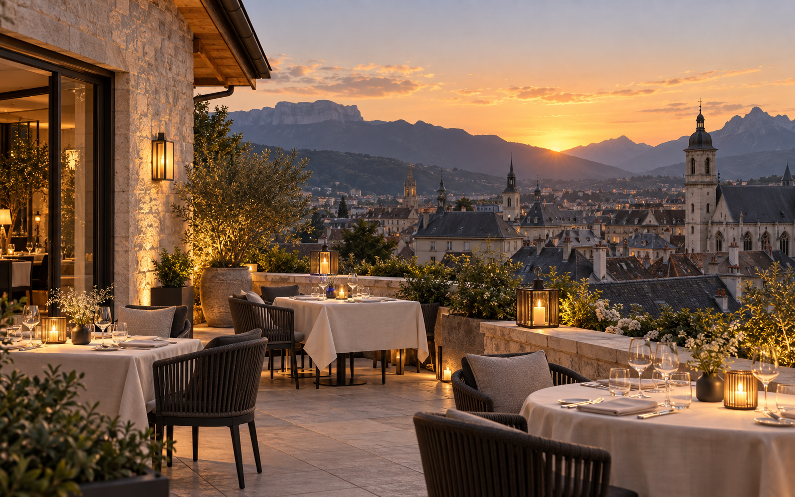

LE QUAI ANTIQUE · CHAMBÉRY
Cuisine gastronomique savoyarde
Le chef Arnaud Michant vous accueille face aux montagnes de Savoie, entre authenticité et modernité.
Voir la carteBienvenue au Quai Antique
Bienvenue sur le site de notre restaurant gastronomique situé au cœur de la magnifique ville de Chambéry. Le chef Arnaud Michant vous invite à découvrir un voyage culinaire mémorable.
Nos menus


Aperçu de notre univers
Une cuisine de partage, des produits de Savoie et un lieu à découvrir.
Voir la galerieRéservations en ligne
Vous pouvez directement réserver votre table sur ce site. Il suffit de cliquer sur le bouton ci-dessous.
Réserver une table